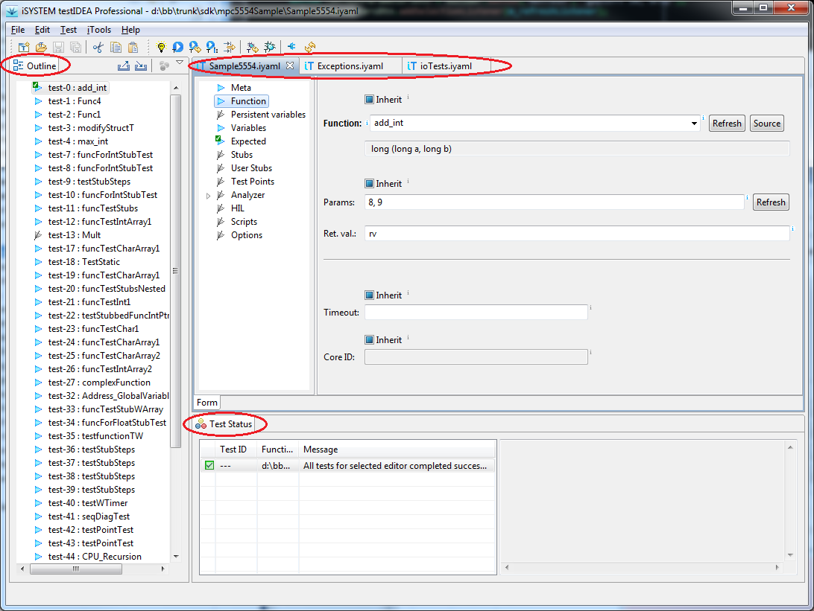

The Main Window
The image below displays the application
main window. It is divided into three areas:

- Outline
This view contains list of all test
cases. By clicking a test case in the tree, its contents is
displayed in Test Case Editor area. Context menu of the
Outline view contains options for creating and deleting test
cases.
- Test Case Editor Area
This area contains editors with controls for viewing and modifying
a test case.
- Test Status view
This view displays status messages. Summary of test results
and error messages during editing are shown here.